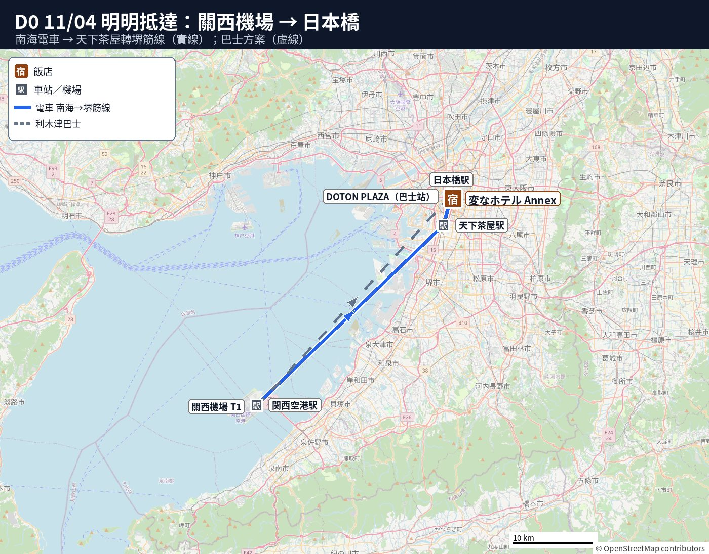
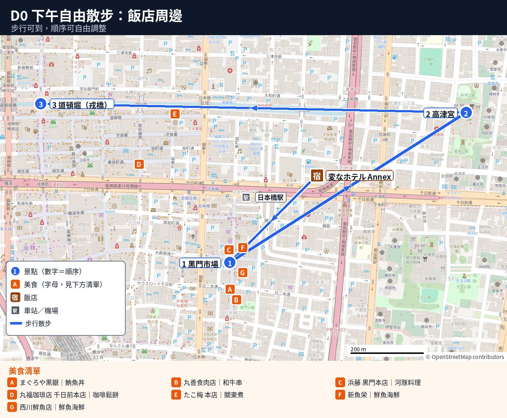

D0 11/04（三）提早抵達：關西機場→飯店放行李
🗺️ 本日地點檔：CSV｜KML（可匯入 Google 我的地圖）
🗓️
Day 0 重點（先行者 一個人先到）（11:10 落地 → 約 13:20 到飯店放行李）
- 誰：只有先行者 1 人搭 JX820 到關西機場。家人 4 人照原本行程，11/5（D1）搭 JX834 到神戶機場。
- 飯店（只住 11/4 一晚）：D0 飯店（名稱、地址看訂房確認信）。日本橋站附近，走路約 3–5 分。
- 推薦交通（最省）：南海 空港急行 → 天下茶屋 換 堺筋線 → 日本橋。每人 ¥1,210，約 1 小時 10 分。
- 輕鬆版：利木津巴士到「DOTON PLAZA大阪」，不用換車，每人 ¥1,800。目標搭 12:50 班（12:15 班太趕）。
- 🧳 行李：入住 14:00 起，不能提早入住。
- 🧳 行李：當天可先寄放櫃台旁免費置物櫃。
- 🧳 行李：若置物櫃滿了交由櫃台保管（官網 FAQ）。
📑 目錄
🗺️ 今日路線圖
圖例：藍圓＝景點（數字為順序）｜橘方＝美食｜連線只表示大概方向


地圖資料 © OpenStreetMap contributors
📍 本日景點（點卡片看詳細）
⚠️
住宿提醒
- ⏰ 時間：11/4 這一晚必訂 1 間房、1 晚。
- ⏰ 時間：11/5 10:00 前退房。
- 🚶 移動：走路約 2 分（約 100m）到 市區飯店。
- 🧳 行李：可先詢問市區飯店能否寄放。
- ⏰ 會合：D1 A 版家人約 13:15 到近鐵日本橋、約 13:30 到飯店。
- ⏰ 會合：D1 B 版約 17:00 到近鐵日本橋、約 17:15 到飯店。
- 📍 地點：會合地點在 市區飯店（依當天訊息為準）。
- ⚠️ 注意：名字相近的姊妹館走路約 5 分勿走錯。
- ⏰ 門禁：半夜 12 點後大門會上鎖。
✈️ 航班與抵達
✈️ 11/04（三）先行者：星宇 JX820 桃園 T1 07:40 → 關西機場（KIX）第1航廈 11:10。入境＋領行李約 60 分（估計）→ 約 12:10 走出入境大廳（1 樓）。
- 先上廁所、買或加值 ICOCA。南海和巴士都可以刷 ICOCA。
🚃 推薦（最省）：南海 空港急行 → 天下茶屋 → 堺筋線 → 日本橋
🚃 約12:26 關西空港 → 天下茶屋
- 路線：T1 2 樓走空橋到「關西空港站」，搭南海「空港急行」（往なんば），在 天下茶屋 下車
- ⏱️ 時間（估計）：🚶 走路 5–8 分（入境大廳→2 樓→南海剪票口）＋ 🚃 搭車約 40 分
- 💴 車資：¥970（每人）
- 班次／替代班：12:26、12:39、12:56、13:09、13:26（平日，約每 15 分一班；時刻以官網為準）
- 🚃 剪票口：南海與 JR 剪票口相鄰，請認明紅色南海。
- 🚃 特急：改搭對號座 rapi:t 班次為 12:35、13:05。
- 🚃 特急：同樣於天下茶屋下車。
- 💴 費用：售票機買票＋特急券每人約 ¥1,520。
- 💴 費用：車上補特急券加收 ¥300。
- 即時查詢：南海 關西空港站時刻表｜Jorudan｜Google Maps
🚃 約13:10 天下茶屋 → 日本橋
- 路線：同一站換大阪メトロ 堺筋線（茶色，往天神橋筋六丁目），第 3 站 日本橋 下車
- ⏱️ 時間（估計）：🚶 走路 4–5 分（南海月台→地鐵月台，找電梯或電扶梯）＋ 🚃 搭車約 6 分
- 💴 車資：¥240
- 班次／替代班：白天約每 5–8 分一班（估計）
- 即時查詢：Google Maps
🚶 約13:20 日本橋站 7 號出口 → 飯店
- ⏱️ 時間（估計）：🚶 走路約 3–5 分 ＋ 🚃 搭車 0 分
- 💴 車資：¥0
- ⏰ 時間：約 13:20 抵達飯店，行李先放置物櫃。
- ⏰ 時間：14:00 起開始辦理入住。
- 即時查詢：Google Maps 走路｜飯店地圖
⏱️ 推薦路線合計（估計）：出入境大廳 12:10 → 到飯店約 13:20。🚶 走路約 12–18 分＋🚃 搭車約 46 分＋等車與換車約 10 分。每人 ¥1,210。
🚌 輕鬆版：利木津巴士 → DOTON PLAZA大阪
🚌 目標 12:50 關西機場 第1航廈 → DOTON PLAZA大阪
- 路線：關西機場利木津巴士「大阪城・日本橋線」，T1 1 樓 10 號站牌上車，在「DOTON PLAZA大阪」下車
- ⏱️ 時間（估計）：🚶 走路約 2 分（入境大廳→站牌）＋ 🚌 搭車約 54 分
- 💴 車資：¥1,800（每人，可刷 ICOCA，或在 T1 1 樓巴士售票處買票；見下方「怎麼搭」）
- 班次／替代班：11:40、12:15、12:50、13:25、13:50（時刻依官網，當天以站牌為準）
- 🚌 優點：免換車且大行李可置於車底。
- 🚶 步行：下車步行約 450m、8 分（過堺筋、千日前通）。
- ⏰ 目標班次：目標搭 12:50，約 13:44 抵達、13:55 到飯店。
- ⏰ 替代班次：12:15 班次過於匆忙（12:10 方出境且需購票）。
- ⏰ 到站規範：官方建議於發車前 10 分抵達站牌。
- 即時查詢：KATE 時刻表（大阪城・日本橋線）｜大阪シティバス 機場巴士｜Google Maps｜下車後走路
🚌 利木津巴士怎麼搭＋注意事項
✅
以下都依關西空港交通（KATE）官網，2026/11/03 確認。
1. 買票（或刷卡）
- 📍 購票處：T1 1 樓入境大廳外「リムジンバスのりば」窗口或售票機。
- ⏰ 營業時間：A、D 售票處 07:30–22:00，B 處 06:00–22:00。
- ⏰ 營業時間：C 售票處全天營運，各處中午皆開放。
- 💴 票價：至 DOTON PLAZA大阪 大人單程 ¥1,800。
- 💳 支付：售票機支援現金、信用卡、Alipay、WeChat Pay。
- 💳 IC 卡：大阪城・日本橋線（關西空港交通、近鐵巴士）可刷 IC 卡。
- 💳 IC 卡：免購實體票，上車感應讀卡機即可。
- 💳 感應支付：2026/3/1 起支援信用卡感應（Visa 等）。
- 💴 IC 卡餘額：卡內須有 ¥1,800 以上。
- ⚠️ 加值提醒：車上與站牌皆不可加值，請先在機場超商或車站儲值。
- ⚠️ 收據：刷 IC 卡乘車不提供收據。
- ⏰ 時效：普通單程票僅限購票當天有效。
2. 在 10 號站牌排隊
- 📍 站牌：T1 1 樓 10 號搭乘「大阪城・日本橋行き」。
- 🚌 方向：同站牌有多條路線，車頭請認明「大阪城・日本橋」。
- ⏰ 預約與排隊：全線無法預約，請於發車前 10 分抵達。
- 🚌 定員制：客滿即搭下班車，無站立位。
- 關西機場 T1 發車 → DOTON PLAZA大阪 到達（官網時刻表）：
| 機場 T1 發車 | 到 DOTON PLAZA大阪 | 營運公司 |
|---|---|---|
| 11:40 | 12:34 | 關西空港交通 |
| 12:15 | 13:09 | 關西空港交通 |
| 12:50 | 13:44 | 近鐵巴士 |
| 13:25 | 14:19 | 近鐵巴士 |
| 13:50 | 14:44 | 關西空港交通 |
- DOTON PLAZA大阪 是這條線的第一站（後面才到 New Otani、帝國飯店），上表每一班都會停。
- ⏰ 目標班次：目標 12:50（13:44 到）。
- ⏰ 替代班次：若錯過搭乘 13:25（14:19 到）。
- ⏰ 替代班次：出關極快才考慮搭乘 12:15。
3. 行李
- 🧳 寄艙手續：大件行李交站務員放進車底行李艙。
- 🧳 存根：站務員綁行李牌並交付半券（存根）。
- 🧳 存根：半券務必妥善保管勿遺失。
- 🧳 件數限額：每人限帶 2 件。
- 🧳 尺寸重量：總重 30kg 內，每件長寬高總和 2m 內。
- 🧳 規格：行李箱拉桿請預先收合。
- 🧳 隨身物品：護照、現金、相機、筆電及易碎品請隨身攜帶。
- ⚠️ 違禁規範：行動電源嚴禁放置車底行李艙。
- 🧳 隨身行李：可放於車內行李架或座前腳邊。
- 🧳 拒載規範：拉鍊未闔、易傾倒、軟袋或紙袋行李艙恕不受理。
4. 上車後
- ⚠️ 安全規定：依日本法律，所有乘客務必繫妥安全帶。
- 🚭 環境規定：全車禁菸，可飲食但避免濃烈異味食品。
- 🚻 廁所配備：關西空港交通大型巴士附設廁所（故障除外）。
- 🚻 廁所配備：近鐵巴士合作班次多未設廁所。
- ⏰ 如廁提醒：12:50 與 13:25 為近鐵巴士，請上車前先去廁所。
- ⏰ 路況提醒：路況塞車可能延誤，官網時刻僅為預定時間。
5. 在 DOTON PLAZA大阪 下車、拿行李
- 📍 抵達：第一站即為 DOTON PLAZA大阪，聽取廣播準備。
- 🧳 取件：於機場出發班次須憑半券領取行李。
- 🧳 核對：確認行李牌與半券號碼相符後再離開。
- ⚠️ 異常處理：行李拿錯或短少，須於離開站牌前向司機反應。
- ⚠️ 責任限制：官方公告離開現場後可能無法受理協助。
- 📞 遺失物查詢：12:15 班次撥打關西空港交通 072-461-1374。
- 📞 遺失物查詢：12:50、13:25 班次撥打近鐵巴士 06-6781-3231。
6. 走到飯店
- ⏱️ 時間（估計）：🚶 走路約 8 分（約 450m）＋ 🚃 搭車 0 分。要過堺筋、千日前通兩條大馬路，等紅綠燈。
- 走到 D0 飯店（看訂房確認信上的名稱，不要走錯姊妹館）。14:00 前先放置物櫃。
- 即時查詢：Google Maps 走路
🔗 官網：時刻表・票價（大阪城・日本橋線）｜關西機場站牌圖｜搭乘須知（行李、IC 卡、安全帶）｜常見問題（廁所等）
💡 其他交通評估：
- 🚃 HARUKA：前往天王寺離飯店偏遠，不建議搭乘。
- 💴 計程車：單人約 ¥23,000（含通行費，機場觀光協會數據），費用過高。
☕ 下午自由（可選）
👉 詳細：📄 黑門市場・日本橋、📄 高津宮
放好行李後自己逛，全部在飯店附近。
- 黑門市場：走路約 5–8 分。邊走邊吃；下午 5 點後很多店會關。Google Maps
- 高津宮：走路約 5 分。安靜的神社。Google Maps
- 丸福珈琲店 千日前本店：走路約 10 分。老字號咖啡店。Google Maps
- 道頓堀／なんば：走路約 15 分，或日本橋站坐千日前線 1 站到難波。晚餐可在這裡吃。Google Maps
🌙 今天很早起（07:40 的飛機），晚上早點休息。明天家人到市區飯店會合。
⏱️
節奏評估：輕鬆（一個人行動；13:20–14:00 到飯店，下午全部自由）
- 站著、排隊：入境審查和領行李、買巴士票或南海票。
- 可坐下休息點：南海電車或巴士上、丸福珈琲店。
- 可刪減：下午不出門，在飯店休息，為 D1 留體力。
- 可加碼：先去 D1 的市區飯店看位置（走路約 2 分）；在黑門市場、道頓堀先找好 D1 晚餐的店。
📍 今日地點
🏨 住宿：D0 飯店（D0；地址看訂房確認信）
D0 的地點連結都在上面各段（機場、車站、黑門市場、高津宮、丸福珈琲店、道頓堀）。